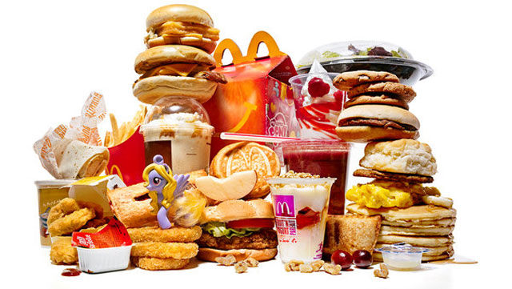
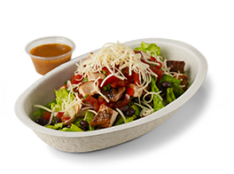

Healthy Fast Food: Tips Before We Begin
First, we highly recommend that you know what your daily Calorie intake should be, especially how many Macronutrients such as Protein, Carbohydrates, and Fats you should be eating. Click the button below if you want to learn how to calculate your daily calorie intake and Macronutrients:
In order to get a good estimation of how many calories we'll be eating/adding to our food, and the ability to track calories. Just remember, that you don't have to purchase anything.
They're recommended in order to get an accurate estimate of how many calories we're eating. If you want to learn more about these tools and others then check out our Tools for Weight Loss page here:
We recommend downloading the FREE app called MyFitnessPal.
If you don't want to download their app then you can access and log your food through their website. The other tool, which might be the most important one, is a food scale. We'll use
a food scale to measure out how many grams of food we're adding/eating. You can purchase a food scale from Target for around $20. Here's a cheaper one we found on Amazon:
There are also portable versions you can take to school, work, or to a restaurant:
How can Fast Food from Restaurants be Healthy?
There are a lot of people who want a six-pack or just to have their abs show, some even want to lose fat from parts of their body like their cheeks, belly, thighs, etc.
In order for that to happen we need to lower our Body Fat percentage through diet.
Diet itself is pretty simple, but what if you're too busy to prepare meals or maybe you forgot your lunch at home? What can you do?
In order to lose weight you'll need to be at a Calorie Deficit. Basically,
you have a set number of calories that you can eat per day to stay at the same weight, which is called TDEE or Total Daily Energy Expenditure. If you were to eat 300 to 500 Calories under your TDEE then you'll lose
weight in the form of fat. Going too low under your TDEE may cause you to gain weight, which we cover in our Nutrition section here.

Before we begin, we'd like to say that cheat meals aren't recommended in the first 2 to 3 weeks of dieting. An example of a cheat meal would be
going to McDonald's and getting a Big Mac w/ Fries and a Large Pop. The Big Mac itself has 29 grams of Fat, 45 grams of Carbs, and about 25 grams of Protein.
Adding in Fries and a drink adds a lot more to those numbers. If you're dieting and you've calculated your Macronutrients then you've probably hit half or more of your
total Fat intake for the day. If you stick to your diet then you'd have to eat fat-free/low-fat food for the rest of the day.
Also, fat is what makes food taste good so without the fat,
our food won't taste that great. You can eat Egg Whites and maybe some Oatmeal for the rest of the day. Maybe even some fruit to meet your Macronutrient goals.
By following our tips, you can make Fast Food healthy and still lose weight!
How is Chipotle different?
First, we aren't sponsored by Chipotle so this "nutrition program" is from our personal experience that you can try. Chipotle is a fast food restaurant that mainly serves mexican-based dishes such as burritos, burrito bowls, tacos, etc. Take a look at Yelp to find one near you. Anyway, they give you the option of adding rice, beans, fajitas, meat, salsa, cheese, lettuce, and a few other items to your meals.
We choose Chipotle because it is cleaner than most other fast food. By this we mean that most of their ingredients are not fried or have oil added to them. You can find a list of their ingredients and nutrition facts
for each of their food items on their website and even build your meals online. They don't offer meal delivery but if you place your order online or through their app, you can beat their
long lines at lunch and pick up your meal at the register.
Also, many of the side dishes or options are made with fresh vegetables.
There are two downsides we found to their food however. First, we can't accurately count how many Calories or Macronutrients are in our meals.
Second, they add A LOT of sodium to their food. We've found ways to deal with these and even add a few things to our meals so let's get started!
What do you order?
The main objective here is to find a meal that won't have too much fat or too many Carbs. The amount of Protein can be as high as you'd like We mainly recommend purchasing a Burrito Bowl. However, if your Macros for Carbs are high or you aren't expecting yourself to eat a big dinner then you can also purchase a Burrito. Their tortilla has 10 grams of Fat, 46 grams of Carbs, and 7 grams of Protein. You might be well over 100 grams of Carbs after all this so keep that in mind. Chipotle allows you to create your own bowl or burrito by combining different foods together. Their bowl gives you these options:
-
Rice
- White Rice
- Brown Rice
- Black Beans
- Pinto beans
- Steak
- Chicken
- Carnitas (Pulled Pork)
- Barbacoa (Pulled Beef)
- Sofritas (Tofu)
- Fresh Tomato Salsa (Mild)
- Roasted Chili Corn Salsa (Medium)
- Tomatillo Green Chili Salsa (Medium)
- Tomatillo Red Chili Salsa (Hot)
Beans
Fajitas
Protein
Salsa
Sour Cream
Cheese
Guacamole
Romaine Lettuce
*If you want a burrito then add Tortilla (Burrito).
Let's put it together!
For our bowl we'll keep it very simple. Adding extra protein will cost more, and just adding guacamole will cost you so we're going to stay away from those two options.
- White Rice
- No Beans
- Fajitas
- Steak
- Mild (Fresh Tomato Salsa)
- Medium (Tomatillo Green Chili Salsa)
- Lettuce (Add Extra Lettuce)
Burrito bowl:
You can add as much salsa and lettuce as you want. But go easy on the Corn Salsa as it has about 16 grams of Carbs per serving. We add extra lettuce to our bowl so we feel more full later
in the day. Choosing beans is just a personal preference. We don't like how much sodium is in the beans and found our bowl to taste better without them.
Also, you can do half/half on protein.
Meaning that you can choose half chicken and half steak or any other combo, where they'll only charge you for choosing one protein item. This is a good way to get the best of both worlds if you're unsure on what
protein you want. We don't recommend Sour Cream or Cheese because of the extra fat you'll be adding. We've come up with a method to add the taste of Sour Cream and Cheese to your meals without
adding all the extra fat with it.
How can we add Sour Cream and Cheese to our Bowls or Burritos?
In order to add these two items to our bowls we recommend purchasing alternatives of Sour Cream and Cheese from the grocery store. They are:
Chobani Non-Fat Greek Yogurt (Plain)
Fat Free Kraft Mozzarella Cheese
Surprisingly, Chobani can be found on Amazon as well. It's quite pricey online so we recommend getting it at your local grocery store:
If you can't find Fat free cheese or don't want to eat it then you can buy Low-Moisture Part Skim Mozzarella Cheese. Honestly, if that's the case then go ahead and add Cheese to your bowl from Chipotle. The Macronutrients are about the same as Low-Moisture Part-Skim Mozzarella Cheese.
Why Chobani Yogurt?
We recommend Chobani yogurt because 1 serving is equal to 1 cup or 227 grams. Also, 1 serving contains 0 grams of Fat, 9 grams of Carbs, and 22 grams of Protein. We doubt you'll be adding 1 full serving of it to your bowl. Adding a tablespoon or two will be more than enough, and the Macros will be ideal where you won't have to worry about any added fat or too many carbs. Furthermore, you can use Greek Yogurt for a lot of other dishes or even eat it as a snack mixed with fruit and granola. We've used it to replace sour cream for Tacos and our own homemade burrito bowls. They sell smaller containers at grocery stores so you can take one with you to work to leave in the refrigerator.
Just put your burrito bowl on a food scale, hit Tare, and add however much yogurt to your bowl. Then take the amount of grams of added yogurt and add it into MyFitnessPal.
How do I count how many calories my Burrito Bowl has?
We can't really know how much food is added to our Burrito or Burrito Bowl because the servers are using spoons or their hands to add each item to your meal. So how can we get an
estimate of how many calories of each item they're adding? We can't. Unless you bring a food scale and have them count out how many grams of each item is in your meal, you won't get
accurate readings. Instead, we OVERESTIMATE how much food is in our bowls.
For example, if we get one serving of White Rice then in MyFitnessPal we'll enter 1.3 to 1.5 servings instead of just
one. Another example can be with Steak. How much food you get really depends on your server. Some servers give a lot of food and some really skimp on items like protein. So for protein we'll enter
1.1 to 1.2 servings instead of 1 serving because we know they won't give us too much extra steak. Just keep an eye on how much they're adding and you can make a relative estimation on
how much you should overestimate.
How does Chipotle fit into our diet?
So if we total up our Macros for our Burrito Bowl with our Overstimates for each food then we come out to:
We're mainly concerned with the Protein, Fat, and Carbohydrates in this picture. So our final macros come out to be:
Fat: 14 grams
Protein: 47 grams
Carbs: 80 grams
Those Macros are not bad at all. If you've calculated Macros from our Nutrition page then you can see that we
have a moderate amount of Protein, a decent amount of Carbs, and low Fat with this meal. This means you'll have
room in your Calories to specifically eat more Fat and Carbs later in the day!
But their food has a lot of Sodium.
In order to counteract the bloating that comes with eating all the sodium in Chipotle's food, we recommend drinking a glass of water before eating your food. It's not good to drink too much water at once so increase your water intake for the day you know you'll be going to Chipotle, and spread your intake out throughout the day. By drinking enough water, we'll be hydrated but we will also feel more full. Drinking water can curb hunger more than anything. You might feel hunger at times, but instead you're probably just dehydrated.
In the end, we're getting a nutritous and already made meal for us that tastes good. Chipotle is good on a diet because it fills you up so you won't have hunger cravings later in the day, and it has a lot of protein in each meal. We hope this helps you out! We'll be creating a series on "Losing weight with Fast Food". So Stay tuned!
References
- News, C. (2016, January 29). McMaster University Study: How to lose weight and gain muscle — fast. Retrieved April 01, 2017, from http://www.cbc.ca/news/canada/hamilton/news/how-to-lose-weight-and-gain-muscle-fast-new-mcmaster-study-1.3423359Nutrition
- Calculator - Chipotle. (n.d.). Retrieved April 01, 2017, from https://chipotle.com/nutrition-calculator